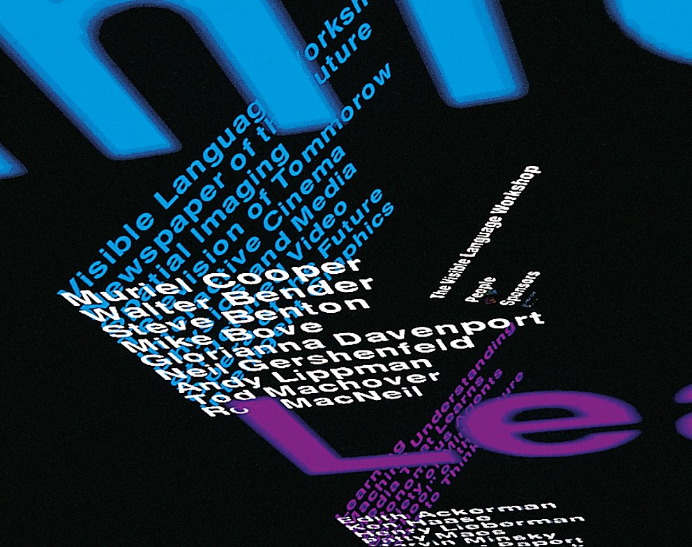

Still, Cooper took advantage of the technology, such as computer-based typography and 3D text, which emerged in the evolving field of electronic communication. Her pioneering work on data visualization was on display at the 1994 TED5 Conference in California, where she presented Information Landscapes, a new interface that recast how designers perceived the possibilities of electronic media. Then-student David Small, who created the computer code for that TED5 presentation, told the audience at the Cooper event that it was one of the most exciting moments in his life: “I had no idea, going into it, what she was going to say. She never made a note or jotted anything down. She just talked and I latched on to everything she said as much as I could and tried to keep up with her.”
